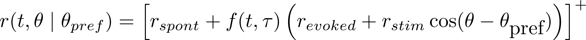

Neural population dynamics
Visualize how the activity of three neurons looks in population space.
Each neuron's time-varying firing rate (or PSTH) in response to a stimulus θ is modeled as:

The idea is that f(t,τ) is a stimulus-evoked gain signal that ramps up from 0 to 1 (with time constant τ) when the stimulus comes on. Each neuron is assumed to be cosine-tuned, where the preferred stimuli of the three neurons are 45º, 135º, and 180º, respectively.